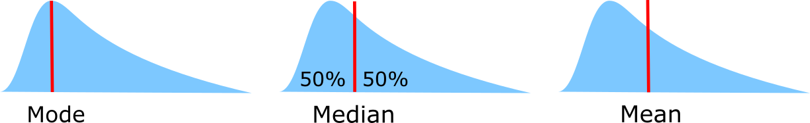

Descriptive Statistics¶

wikipedia/probability_density_function
Measuring Location¶
- Mode
- Most common value
- Median
- Central Value (less sensitive to outliers)
- Mean
- Sum observations / number of observations
Measuring Variability¶
- Range
- Largest observation – smallest observation
- Quantiles
- Split data like into equally numbered groups. Median into two, quartiles into 4
- Interquartile Range
- Range between top and bottom quartile. Shows where the middle 50% of the data lies. Not influenced by outliers
- Standard Deviation
Average deviation from the mean. Measures homogeneity of individual values.
\[std = \sqrt{\frac{\sum(xi-xm)^2}{n-1}}\]
Distributions¶
- Normal (=Gaussian) distribution
- Most common, unimodal, symmetrical. Other distributions tend to normalize when we increase sample size. Entirely defined by two parameters: means and std.

src:wikipedia/Normal_distribution
- Law Of Large Numbers
- As a sample size grows, its mean will get closer and closer to the average of the whole population.
- Standard Error
Standard deviation of the sampling distribution of a statistic, most commonly of the mean. It can be seen as how far the sample mean is likely to be from the population mean
\[SE = \frac{std}{\sqrt{n}}\]- 95% Confidence Interval
Range in which 95% of the true population mean is likely to lie.
\[CI = [mean-1.96*SE , mean+1.96*SE]\]May not be good for small sample sized and very non normal distributions. In that case we can use the t-distribution to replace the 1.96